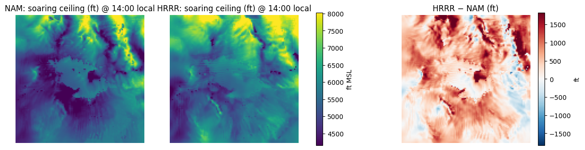
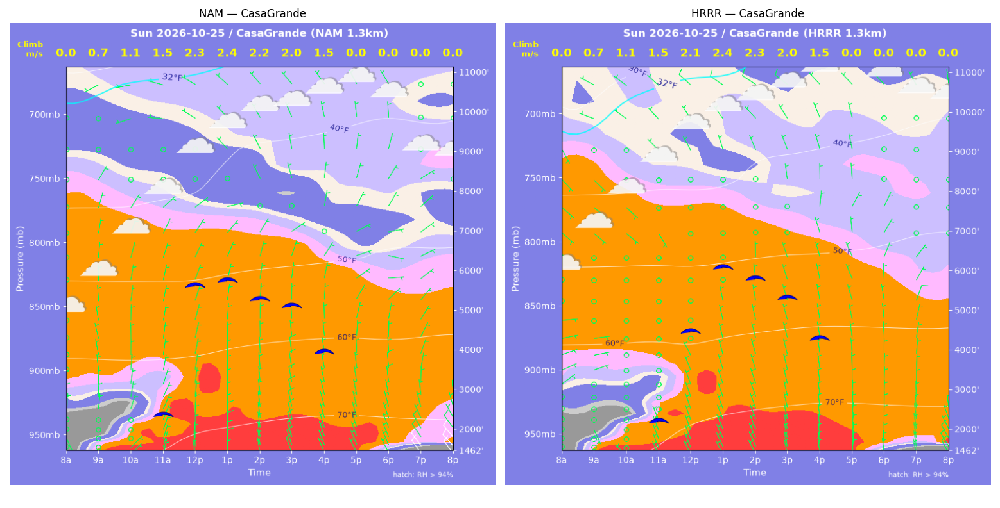
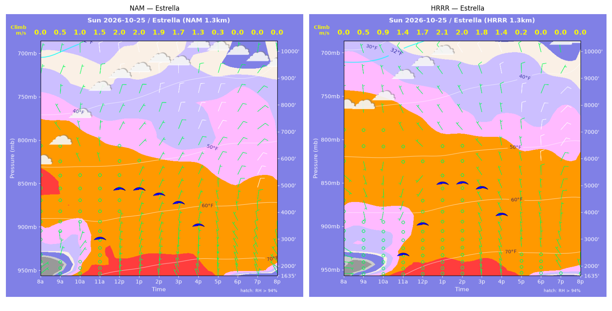
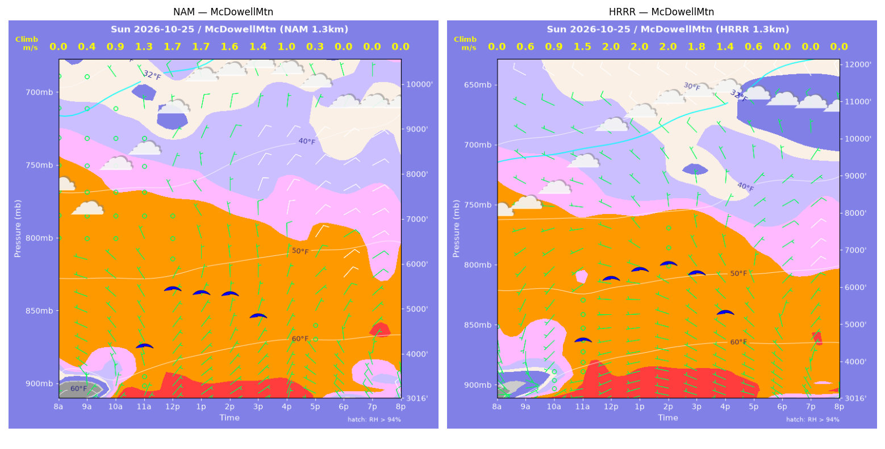
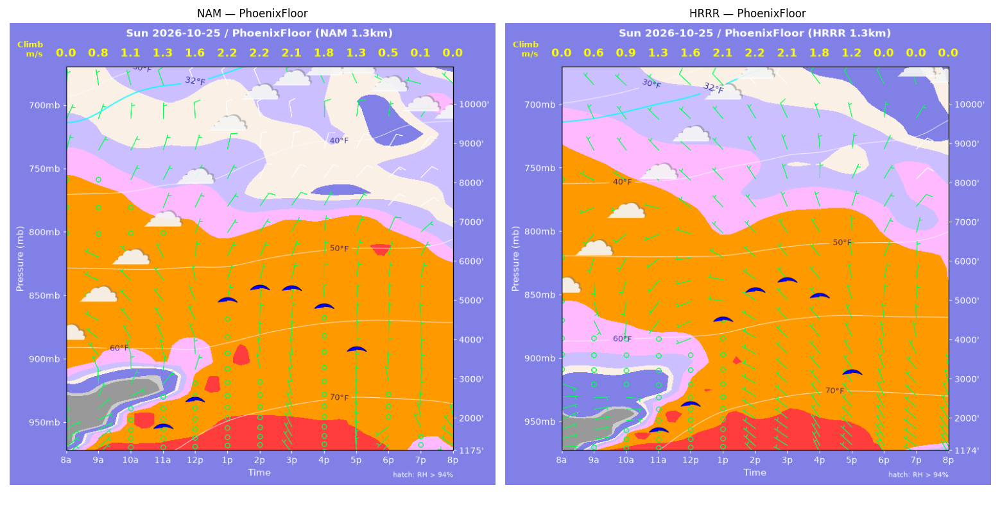
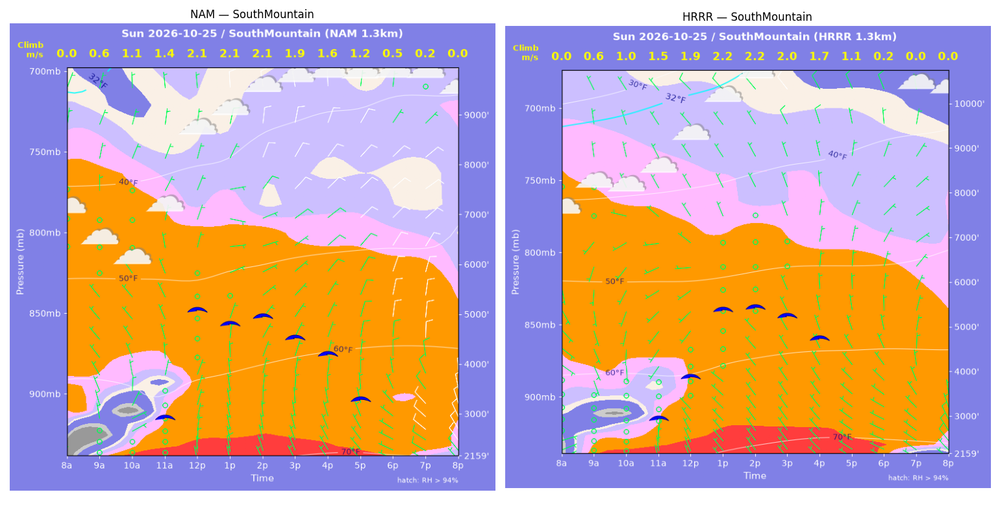
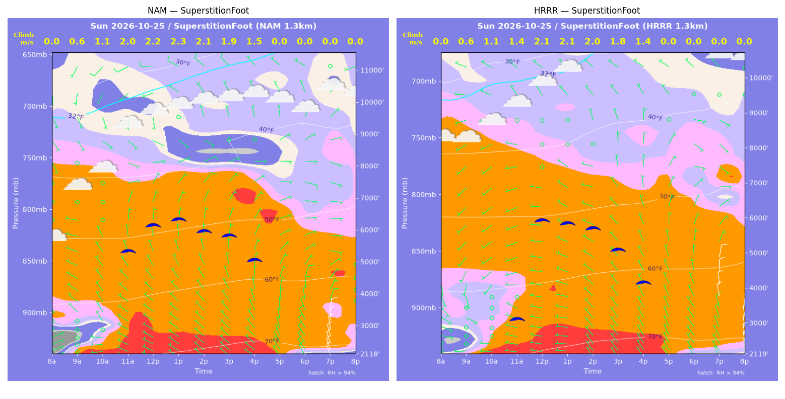
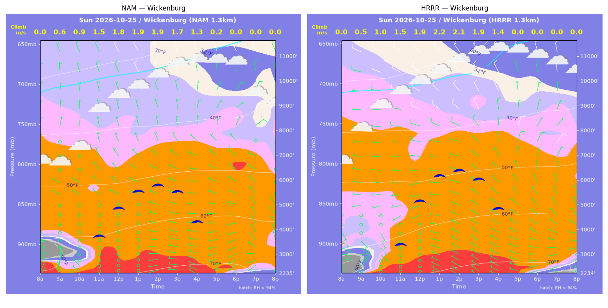

../runs/ab-phoenix-nam — model nam, cycle 2026-10-24 18z, dx 1.3333333740234374 km, 13 hours, grid 114×114../runs/ab-phoenix-hrrr — model hrrr, cycle 2026-10-24 18z, dx 1.3333333740234374 km, 13 hours, grid 114×114Grids identical; afternoon = 12:00–17:59 local (UTC-7). Δ = HRRR − NAM.
| Site | terrain ft | BL top (AGL) med|Δ| / bias (ft) | w* med|Δ| / bias (fpm) | Soaring ceiling med|Δ| / bias (ft) | BL wind speed med|Δ| / bias (kt) | BL wind dir med|Δ| / bias (deg) | 2 m temperature med|Δ| / bias (F) | Sfc LCL (AGL) med|Δ| / bias (ft) | Sensible heat flux med|Δ| / bias (W/m2) |
|---|---|---|---|---|---|---|---|---|---|
| PhoenixFloor | 1175 | 233 / +18 | 7 / -4 | 264 / -95 | 2 / -2 | 67 / -64 | 1 / +1 | 575 / +696 | 3 / +0 |
| SouthMountain | 2159 | 845 / +394 | 18 / -1 | 662 / +8 | 2 / -2 | 44 / -56 | 2 / +2 | 1122 / +1047 | 12 / -11 |
| SuperstitionFoot | 2118 | 510 / -367 | 23 / -21 | 323 / -395 | 3 / -3 | 101 / -94 | 1 / +1 | 917 / +805 | 20 / -17 |
| Estrella | 1635 | 565 / +12 | 20 / -2 | 436 / +68 | 2 / -2 | 57 / -7 | 1 / +1 | 702 / +771 | 3 / +3 |
| Wickenburg | 2236 | 524 / +156 | 39 / +25 | 543 / +445 | 4 / +3 | 40 / -14 | 1 / +1 | 563 / +560 | 35 / +28 |
| CasaGrande | 1463 | 686 / +332 | 9 / +1 | 371 / +65 | 2 / -1 | 59 / -24 | 1 / +1 | 494 / +493 | 5 / +3 |
| McDowellMtn | 3016 | 1509 / +1375 | 73 / +70 | 1218 / +1183 | 2 / -1 | 12 / -14 | 2 / +2 | 795 / +824 | 50 / +43 |
| Metric | n | median |Δ| | p90 |Δ| | bias |
|---|---|---|---|---|
| BL top (AGL) (ft) | 42 | 649 | 1564 | +274 |
| w* (fpm) | 42 | 21 | 63 | +10 |
| Soaring ceiling (ft) | 42 | 516 | 1179 | +183 |
| BL wind speed (kt) | 42 | 3 | 5 | -1 |
| BL wind dir (deg) | 42 | 47 | 116 | -39 |
| 2 m temperature (F) | 42 | 1 | 2 | +1 |
| Sfc LCL (AGL) (ft) | 42 | 653 | 1138 | +742 |
| Sensible heat flux (W/m2) | 42 | 8 | 43 | +7 |
diffmap_tol.png| local | BL top NAM/HRRR ft | w* NAM/HRRR fpm | ceiling NAM/HRRR ft | BL wind NAM/HRRR | T2 NAM/HRRR F | HFX NAM/HRRR |
|---|---|---|---|---|---|---|
| 08:00 | 0 / 0 | 0 / 0 | 1175 / 1175 | 3kt@049 / 2kt@112 | 60 / 59 | 0 / 0 |
| 09:00 | 786 / 457 | 153 / 115 | 1175 / 1175 | 4kt@064 / 3kt@083 | 65 / 64 | 69 / 51 |
| 10:00 | 1366 / 895 | 218 / 184 | 1175 / 1175 | 4kt@060 / 5kt@086 | 68 / 68 | 117 / 108 |
| 11:00 | 1664 / 1569 | 260 / 254 | 1854 / 1776 | 4kt@039 / 1kt@015 | 71 / 72 | 164 / 162 |
| 12:00 | 2456 / 2343 | 315 / 313 | 2503 / 2432 | 4kt@357 / 2kt@265 | 74 / 75 | 199 / 205 |
| 13:00 | 5723 / 5125 | 437 / 422 | 5000 / 4546 | 5kt@032 / 3kt@299 | 76 / 77 | 228 / 230 |
| 14:00 | 6141 / 6101 | 440 / 442 | 5293 / 5271 | 8kt@036 / 4kt@322 | 77 / 78 | 218 / 222 |
| 15:00 | 6281 / 6586 | 414 / 421 | 5270 / 5501 | 8kt@037 / 5kt@336 | 78 / 79 | 178 / 178 |
| 16:00 | 6168 / 6563 | 349 / 358 | 4808 / 5104 | 7kt@030 / 5kt@345 | 78 / 79 | 109 / 110 |
| 17:00 | 6316 / 6477 | 259 / 239 | 3716 / 3168 | 6kt@032 / 4kt@015 | 78 / 79 | 43 / 33 |
| 18:00 | 1865 / 784 | 106 / 0 | 1175 / 1175 | 5kt@354 / 3kt@325 | 78 / 78 | 10 / -1 |
| 19:00 | 107 / 893 | 21 / 0 | 1175 / 1175 | 2kt@296 / 5kt@307 | 77 / 77 | 1 / -2 |
| 20:00 | 761 / 469 | 0 / 0 | 1175 / 1175 | 5kt@352 / 5kt@325 | 76 / 75 | -1 / -2 |
| local | BL top NAM/HRRR ft | w* NAM/HRRR fpm | ceiling NAM/HRRR ft | BL wind NAM/HRRR | T2 NAM/HRRR F | HFX NAM/HRRR |
|---|---|---|---|---|---|---|
| 08:00 | 0 / 0 | 0 / 0 | 2159 / 2159 | 3kt@342 / 4kt@069 | 61 / 63 | 0 / 0 |
| 09:00 | 436 / 723 | 109 / 119 | 2159 / 2159 | 0kt@291 / 1kt@165 | 64 / 66 | 45 / 36 |
| 10:00 | 1034 / 1011 | 211 / 200 | 2159 / 2159 | 3kt@015 / 1kt@205 | 65 / 67 | 139 / 121 |
| 11:00 | 1815 / 1811 | 278 / 289 | 3000 / 3043 | 5kt@352 / 2kt@207 | 67 / 69 | 183 / 205 |
| 12:00 | 4531 / 2955 | 420 / 365 | 5134 / 3952 | 4kt@020 / 4kt@214 | 70 / 71 | 253 / 254 |
| 13:00 | 4092 / 4889 | 420 / 438 | 4844 / 5429 | 3kt@070 / 1kt@334 | 71 / 73 | 281 / 267 |
| 14:00 | 4302 / 4977 | 417 / 434 | 4971 / 5473 | 5kt@066 / 0kt@102 | 72 / 73 | 261 / 255 |
| 15:00 | 3862 / 4887 | 374 / 397 | 4539 / 5278 | 7kt@046 / 3kt@353 | 72 / 74 | 210 / 200 |
| 16:00 | 3734 / 4627 | 322 / 331 | 4216 / 4773 | 8kt@041 / 6kt@009 | 72 / 74 | 139 / 122 |
| 17:00 | 3566 / 4113 | 241 / 223 | 3314 / 2159 | 9kt@031 / 7kt@006 | 72 / 73 | 61 / 42 |
| 18:00 | 987 / 848 | 108 / 48 | 2159 / 2159 | 5kt@322 / 7kt@293 | 71 / 73 | 20 / 2 |
| 19:00 | 227 / 721 | 43 / 0 | 2159 / 2159 | 8kt@295 / 7kt@308 | 71 / 71 | 5 / -3 |
| 20:00 | 896 / 635 | 0 / 0 | 2159 / 2159 | 9kt@335 / 8kt@327 | 70 / 70 | -1 / -2 |
| local | BL top NAM/HRRR ft | w* NAM/HRRR fpm | ceiling NAM/HRRR ft | BL wind NAM/HRRR | T2 NAM/HRRR F | HFX NAM/HRRR |
|---|---|---|---|---|---|---|
| 08:00 | 0 / 0 | 0 / 0 | 2118 / 2119 | 5kt@066 / 0kt@305 | 58 / 64 | 0 / 0 |
| 09:00 | 579 / 495 | 127 / 123 | 2118 / 2119 | 2kt@328 / 1kt@078 | 65 / 66 | 54 / 56 |
| 10:00 | 1221 / 1447 | 215 / 220 | 2118 / 2119 | 5kt@325 / 0kt@125 | 68 / 69 | 125 / 113 |
| 11:00 | 5128 / 2228 | 391 / 285 | 5361 / 3188 | 4kt@042 / 5kt@252 | 71 / 71 | 180 / 159 |
| 12:00 | 6006 / 5854 | 440 / 421 | 6145 / 5966 | 6kt@072 / 1kt@359 | 72 / 73 | 220 / 196 |
| 13:00 | 6195 / 5714 | 451 / 420 | 6313 / 5871 | 7kt@069 / 3kt@309 | 73 / 73 | 229 / 200 |
| 14:00 | 5795 / 5625 | 422 / 401 | 5930 / 5727 | 7kt@068 / 3kt@291 | 73 / 74 | 201 / 177 |
| 15:00 | 5901 / 5069 | 381 / 349 | 5799 / 5101 | 7kt@076 / 3kt@335 | 74 / 74 | 146 / 129 |
| 16:00 | 5810 / 4702 | 294 / 269 | 5024 / 4174 | 5kt@091 / 5kt@350 | 74 / 74 | 68 / 63 |
| 17:00 | 2424 / 2964 | 0 / 0 | 2118 / 2119 | 6kt@015 / 7kt@342 | 73 / 73 | -1 / -2 |
| 18:00 | 1099 / 716 | 0 / 0 | 2118 / 2119 | 8kt@340 / 6kt@322 | 68 / 69 | -7 / -3 |
| 19:00 | 1154 / 970 | 0 / 0 | 2118 / 2119 | 10kt@006 / 9kt@344 | 66 / 67 | -10 / -5 |
| 20:00 | 728 / 1246 | 0 / 0 | 2118 / 2119 | 8kt@008 / 11kt@003 | 66 / 67 | -21 / -12 |
| local | BL top NAM/HRRR ft | w* NAM/HRRR fpm | ceiling NAM/HRRR ft | BL wind NAM/HRRR | T2 NAM/HRRR F | HFX NAM/HRRR |
|---|---|---|---|---|---|---|
| 08:00 | 0 / 0 | 0 / 0 | 1635 / 1635 | 2kt@029 / 6kt@092 | 59 / 64 | 0 / 0 |
| 09:00 | 300 / 343 | 92 / 103 | 1635 / 1635 | 1kt@080 / 1kt@071 | 66 / 67 | 39 / 49 |
| 10:00 | 1288 / 805 | 190 / 179 | 1635 / 1635 | 3kt@012 / 1kt@123 | 69 / 69 | 82 / 109 |
| 11:00 | 2915 / 1975 | 292 / 272 | 3084 / 2513 | 2kt@329 / 2kt@206 | 72 / 72 | 132 / 156 |
| 12:00 | 5141 / 3425 | 393 / 344 | 4898 / 3628 | 4kt@030 / 3kt@209 | 73 / 74 | 182 / 184 |
| 13:00 | 5089 / 5388 | 399 / 409 | 4891 / 5126 | 4kt@040 / 3kt@331 | 74 / 75 | 193 / 197 |
| 14:00 | 4901 / 5476 | 376 / 395 | 4667 / 5119 | 5kt@030 / 3kt@326 | 74 / 76 | 167 / 175 |
| 15:00 | 4760 / 5507 | 336 / 357 | 4357 / 4929 | 7kt@023 / 4kt@334 | 75 / 76 | 123 / 129 |
| 16:00 | 4481 / 5036 | 264 / 276 | 3522 / 3941 | 6kt@024 / 3kt@002 | 75 / 76 | 63 / 65 |
| 17:00 | 934 / 544 | 60 / 37 | 1635 / 1635 | 4kt@346 / 2kt@329 | 74 / 75 | 3 / 1 |
| 18:00 | 321 / 84 | 0 / 0 | 1635 / 1635 | 4kt@335 / 1kt@093 | 71 / 72 | -0 / -0 |
| 19:00 | 586 / 84 | 0 / 0 | 1635 / 1635 | 7kt@335 / 2kt@038 | 69 / 70 | -2 / -1 |
| 20:00 | 84 / 84 | 0 / 0 | 1635 / 1635 | 3kt@013 / 2kt@044 | 68 / 69 | -1 / -1 |
| local | BL top NAM/HRRR ft | w* NAM/HRRR fpm | ceiling NAM/HRRR ft | BL wind NAM/HRRR | T2 NAM/HRRR F | HFX NAM/HRRR |
|---|---|---|---|---|---|---|
| 08:00 | 0 / 0 | 0 / 0 | 2236 / 2235 | 5kt@027 / 2kt@296 | 56 / 56 | 0 / 0 |
| 09:00 | 722 / 372 | 125 / 107 | 2236 / 2235 | 4kt@015 / 3kt@033 | 63 / 62 | 39 / 49 |
| 10:00 | 879 / 1328 | 171 / 203 | 2236 / 2235 | 2kt@027 / 4kt@143 | 66 / 67 | 84 / 96 |
| 11:00 | 3134 / 2501 | 290 / 291 | 3777 / 3471 | 3kt@308 / 3kt@238 | 70 / 70 | 116 / 151 |
| 12:00 | 4468 / 4728 | 352 / 383 | 4883 / 5191 | 3kt@316 / 7kt@276 | 71 / 71 | 146 / 182 |
| 13:00 | 5331 / 6011 | 378 / 424 | 5543 / 6196 | 4kt@340 / 9kt@295 | 72 / 73 | 152 / 195 |
| 14:00 | 5734 / 6357 | 373 / 417 | 5765 / 6391 | 4kt@340 / 9kt@297 | 73 / 74 | 135 / 175 |
| 15:00 | 5744 / 6169 | 334 / 373 | 5503 / 6032 | 4kt@331 / 8kt@322 | 73 / 74 | 96 / 129 |
| 16:00 | 5439 / 5590 | 253 / 280 | 4296 / 4853 | 4kt@316 / 7kt@355 | 73 / 74 | 43 / 60 |
| 17:00 | 4636 / 3431 | 39 / 0 | 2236 / 2235 | 6kt@301 / 5kt@314 | 73 / 73 | -1 / -1 |
| 18:00 | 84 / 84 | 0 / 0 | 2236 / 2235 | 2kt@216 / 3kt@241 | 69 / 68 | -1 / -1 |
| 19:00 | 329 / 84 | 0 / 0 | 2236 / 2235 | 5kt@249 / 2kt@221 | 66 / 67 | -3 / -1 |
| 20:00 | 83 / 83 | 0 / 0 | 2236 / 2235 | 4kt@266 / 1kt@298 | 65 / 66 | -1 / -0 |
| local | BL top NAM/HRRR ft | w* NAM/HRRR fpm | ceiling NAM/HRRR ft | BL wind NAM/HRRR | T2 NAM/HRRR F | HFX NAM/HRRR |
|---|---|---|---|---|---|---|
| 08:00 | 0 / 0 | 0 / 0 | 1463 / 1462 | 2kt@120 / 1kt@106 | 59 / 59 | 0 / 0 |
| 09:00 | 544 / 608 | 138 / 146 | 1463 / 1462 | 1kt@130 / 3kt@154 | 64 / 65 | 74 / 78 |
| 10:00 | 1132 / 1046 | 216 / 216 | 1463 / 1462 | 4kt@018 / 1kt@359 | 68 / 69 | 137 / 149 |
| 11:00 | 1951 / 1714 | 291 / 286 | 2426 / 2288 | 6kt@009 / 1kt@353 | 72 / 73 | 196 / 212 |
| 12:00 | 6158 / 4655 | 451 / 418 | 5634 / 4510 | 3kt@051 / 1kt@168 | 75 / 76 | 232 / 245 |
| 13:00 | 6248 / 6706 | 463 / 476 | 5739 / 6100 | 3kt@079 / 1kt@344 | 76 / 77 | 248 / 252 |
| 14:00 | 5737 / 6423 | 428 / 449 | 5262 / 5804 | 3kt@040 / 1kt@021 | 76 / 78 | 214 / 221 |
| 15:00 | 5759 / 6088 | 388 / 393 | 5090 / 5322 | 2kt@054 / 1kt@350 | 77 / 78 | 158 / 156 |
| 16:00 | 4992 / 5677 | 291 / 294 | 3925 / 4306 | 2kt@039 / 5kt@345 | 76 / 78 | 77 / 70 |
| 17:00 | 3432 / 4771 | 0 / 0 | 1463 / 1462 | 5kt@012 / 6kt@341 | 75 / 75 | -2 / -3 |
| 18:00 | 919 / 697 | 0 / 0 | 1463 / 1462 | 7kt@340 / 7kt@359 | 70 / 69 | -4 / -4 |
| 19:00 | 443 / 308 | 0 / 0 | 1463 / 1462 | 9kt@325 / 7kt@350 | 68 / 67 | -9 / -5 |
| 20:00 | 362 / 340 | 0 / 0 | 1463 / 1462 | 9kt@320 / 8kt@332 | 66 / 66 | -10 / -9 |
| local | BL top NAM/HRRR ft | w* NAM/HRRR fpm | ceiling NAM/HRRR ft | BL wind NAM/HRRR | T2 NAM/HRRR F | HFX NAM/HRRR |
|---|---|---|---|---|---|---|
| 08:00 | 0 / 0 | 0 / 0 | 3016 / 3016 | 3kt@008 / 4kt@046 | 57 / 59 | 0 / 0 |
| 09:00 | 245 / 442 | 77 / 111 | 3016 / 3016 | 4kt@037 / 5kt@079 | 60 / 62 | 25 / 46 |
| 10:00 | 1082 / 1063 | 168 / 186 | 3016 / 3016 | 4kt@325 / 3kt@216 | 63 / 64 | 62 / 92 |
| 11:00 | 2905 / 3267 | 264 / 296 | 4243 / 4661 | 4kt@317 / 4kt@244 | 65 / 66 | 91 / 120 |
| 12:00 | 4441 / 5182 | 326 / 390 | 5491 / 6288 | 2kt@354 / 4kt@296 | 66 / 68 | 112 / 174 |
| 13:00 | 4249 / 5457 | 327 / 401 | 5393 / 6514 | 3kt@335 / 4kt@321 | 67 / 69 | 119 / 179 |
| 14:00 | 4336 / 5783 | 316 / 391 | 5361 / 6675 | 6kt@355 / 5kt@336 | 68 / 69 | 104 / 158 |
| 15:00 | 4061 / 5696 | 276 / 355 | 4870 / 6410 | 9kt@008 / 4kt@001 | 68 / 70 | 73 / 120 |
| 16:00 | 3544 / 5114 | 202 / 275 | 3016 / 5344 | 7kt@012 / 5kt@022 | 68 / 70 | 31 / 62 |
| 17:00 | 1808 / 3453 | 58 / 110 | 3016 / 3016 | 2kt@360 / 4kt@004 | 68 / 69 | -0 / 5 |
| 18:00 | 732 / 798 | 0 / 0 | 3016 / 3016 | 6kt@322 / 5kt@308 | 65 / 66 | -6 / -3 |
| 19:00 | 684 / 508 | 0 / 0 | 3016 / 3016 | 7kt@333 / 4kt@339 | 63 / 64 | -6 / -2 |
| 20:00 | 554 / 615 | 0 / 0 | 3016 / 3016 | 6kt@003 / 5kt@015 | 62 / 63 | -8 / -4 |
montage_PhoenixFloor.pngmontage_SouthMountain.pngmontage_SuperstitionFoot.pngmontage_Estrella.pngmontage_Wickenburg.pngmontage_CasaGrande.pngmontage_McDowellMtn.png